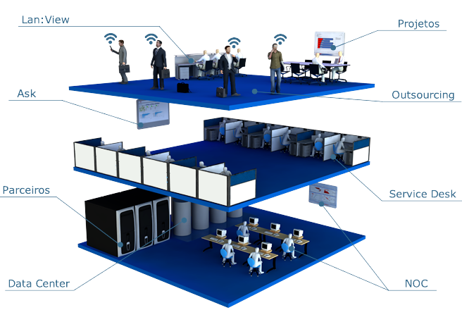

Hardware refere-se aos componentes físicos de um sistema de computador, incluindo processadores, memória RAM, placas gráficas, discos rígidos e periféricos como teclado e mouse. Esses dispositivos são essenciais para o funcionamento e desempenho de computadores e outros dispositivos eletrônicos. Cada componente desempenha funções específicas, como processamento de dados, armazenamento de informações ou interação com o usuário. A evolução constante dos hardwares visa melhorar a velocidade, capacidade e eficiência dos sistemas, influenciando diretamente a experiência do usuário e o desenvolvimento de novas tecnologias.
Abaixo temos alguns destes componentes e clicando em qualquer um você será direcionado ao Site KaBum!
Softwares são programas e aplicações que permitem aos usuários executar tarefas específicas em computadores e dispositivos eletrônicos. Eles incluem sistemas operacionais, aplicativos de produtividade, jogos, ferramentas de edição de imagem e vídeo, entre outros. Os softwares são desenvolvidos através de programação e consistem em código que define as operações que o programa pode realizar. A diversidade de softwares permite personalizar e adaptar a funcionalidade de dispositivos às necessidades individuais dos usuários. Atualizações e novas versões de softwares frequentemente oferecem melhorias de desempenho, segurança e novas funcionalidades.
Redes de computadores podem ser classificadas de acordo com sua extensão e propósito. Redes locais (LANs) conectam dispositivos em uma área geográfica limitada, como escritórios ou residências, facilitando o compartilhamento de recursos como impressoras e arquivos. Redes metropolitanas (MANs) cobrem uma área maior, como uma cidade, permitindo a conexão de várias LANs. Redes de longa distância (WANs) abrangem vastas áreas geográficas, como países ou continentes, utilizando tecnologias como a internet para conectar diferentes redes e facilitar comunicações globais. Outros tipos incluem redes sem fio (Wi-Fi), redes de armazenamento (SANs), e redes virtuais privadas (VPNs), cada uma projetada para necessidades específicas de conectividade e segurança.

Segurança
A segurança da informação e a Lei Geral de Proteção de Dados (LGPD) são essenciais para garantir a privacidade e proteção dos dados pessoais. A segurança da informação envolve práticas e tecnologias para proteger sistemas, redes e dados contra acesso não autorizado, uso indevido, modificação ou destruição. A LGPD, implementada no Brasil em 2020, regula o tratamento de dados pessoais por organizações públicas e privadas, exigindo consentimento explícito dos titulares dos dados, estabelecendo regras para sua coleta, armazenamento, uso e compartilhamento, além de estabelecer penalidades para o não cumprimento das normas. A conformidade com a LGPD promove a transparência, responsabilidade e segurança no tratamento de informações pessoais.
Contatos
Para mais informações ou dúvidas entre em contato conosco através de nosso site:
E-mail: lapatito@sp.senac.br
WhatsApp: (11) 98090-1000
Ou caso prefira pode ir em nossa unidade, localizada em:
Rua Tito, 54 - Vila Romana, São Paulo - SP, 05051-000